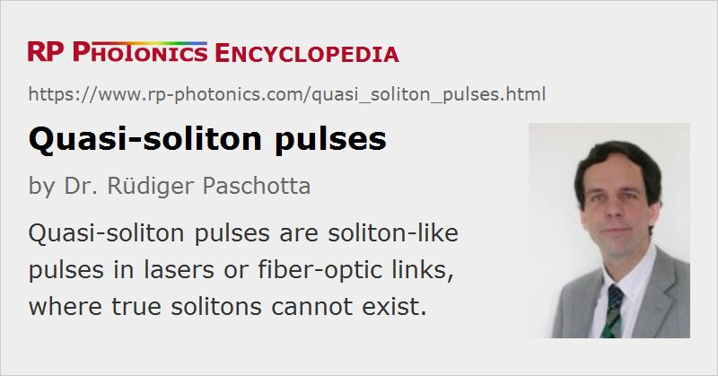

Quasi-soliton Pulses
Definition: soliton-like pulses in lasers or fiber-optic links
German: Quasi-Solitonen
Categories: fiber optics and waveguides, nonlinear optics, light pulses
How to cite the article; suggest additional literature
Author: Dr. Rüdiger Paschotta
Optical pulses circulating in the resonator of a mode-locked laser can experience chromatic dispersion and the Kerr nonlinearity. If the net dispersion is anomalous, this can lead to the formation of quasi-soliton pulses. These are not exactly solitons, since the dispersion and nonlinearity usually come in discrete portions, and the pulse energy varies during a resonator round trip. Nevertheless, the pulses may essentially behave like solitons if the effects of dispersion and nonlinearity are not too strong during one resonator round trip, and other effects are still weaker. The pulses then only experience the averaged dispersion and nonlinearity of the laser resonator. It is then possible to exploit the advantages of soliton mode locking [1], namely the generation of short pulses with low chirp.
Quasi-solitons are often encountered in mode-locked solid-state bulk lasers and fiber lasers. A special kind of quasi-soliton pulses has been discovered in semiconductor lasers, particularly in vertical external-cavity surface-emitting lasers (VECSELs) [3]. Here, the effect of the Kerr nonlinearity is usually weak, but light-induced changes of the carrier density can lead to nonlinear phase changes which are similar to those from the Kerr effect with negative n2 coefficient, even though they do not instantly follow the variations of optical intensity. In that case, quasi-soliton pulses can be formed in the normal dispersion regime. A consequence is that the pulses can be close to the Fourier transform limit. A similar mechanism can be at work in low-power edge-emitting semiconductor lasers.
A kind of soliton-like pulses can also occur in fiber-optic links [2]. Due to the strong periodic modulation of the pulse energy in long transmission lines with in-line erbium-doped fiber amplifiers, the resulting pulses are quasi-soliton pulses instead of true solitons. Some tailored dispersion map can be used for special dispersion management, which can help e.g. to lower the effect of fiber nonlinearities. Note that in this case, in contrast to that of most soliton mode-locked lasers, the effects of nonlinearity and chromatic dispersion per period are usually not small, and the pulse duration exhibits significant oscillations.
Questions and Comments from Users
Here you can submit questions and comments. As far as they get accepted by the author, they will appear above this paragraph together with the author’s answer. The author will decide on acceptance based on certain criteria. Essentially, the issue must be of sufficiently broad interest.
Please do not enter personal data here; we would otherwise delete it soon. (See also our privacy declaration.) If you wish to receive personal feedback or consultancy from the author, please contact him e.g. via e-mail.
By submitting the information, you give your consent to the potential publication of your inputs on our website according to our rules. (If you later retract your consent, we will delete those inputs.) As your inputs are first reviewed by the author, they may be published with some delay.
Bibliography
| [1] | F. X. Kärtner et al., “Stabilization of solitonlike pulses with a slow saturable absorber”, Opt. Lett. 20 (1), 16 (1995), doi:10.1364/OL.20.000016 |
| [2] | A. Hasegawa et al., “Recent progress in dispersion-managed soliton transmission technologies”, Opt. Fiber Technol. 3 (3), 197 (1997), doi:10.1006/ofte.1997.0227 |
| [3] | R. Paschotta et al., “Soliton-like pulse shaping mechanism in passively mode-locked surface-emitting semiconductor lasers”, Appl. Phys. B 75, 445 (2002), doi:10.1007/s00340-002-1014-5 |
See also: solitons, mode locking, soliton mode locking, mode-locked fiber lasers, vertical external-cavity surface-emitting lasers
and other articles in the categories fiber optics and waveguides, nonlinear optics, light pulses
|  |
If you like this page, please share the link with your friends and colleagues, e.g. via social media:
These sharing buttons are implemented in a privacy-friendly way!